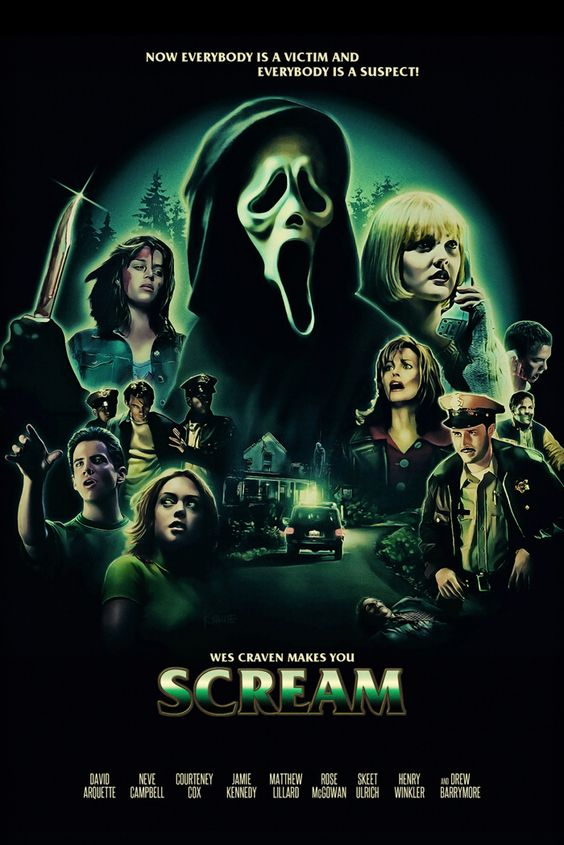

|  | Pânico
Direção: Wes Craven
Roteiro Kevin Williamson
Elenco: Neve Campbell, Courteney Cox, David Arquette
Sidney Prescott (Neve Campbell) começa a desconfiar que a morte de dois estudantes está relacionada com o falecimento da sua mãe, há cerca de um ano. Enquanto isso, os jovens da pacata cidadezinha começam a receber ligações de um maníaco que faz perguntas sobre filmes de horror. Quem erra, morre. As perguntas seguem uma lógica que será desvendada numa grande festa escolar. |
|
Acesse mais em YouTube SESSÕES
|